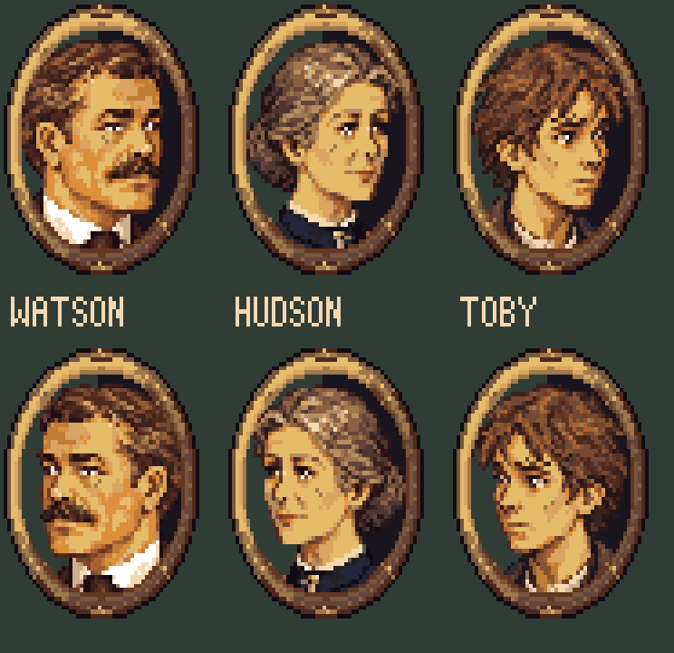

Latest: ornate ribbon-and-laurel frame (r22)
Closer facial detail in an antique-brass oval frame. The same fixed faces now turn both ways; the frame keeps its lighting and the mouth and eye overlays stay aligned.
Rooms, title cards & interface · Source and integration notes
Loading…
Move the speaker left or right. The cameo sits on that side and looks inward toward the text.
This demonstrates the art handoff. The engine currently uses a fixed portrait position; automatic facing and dialogue placement still need implementation there. In play, select the side once at the start of a line.

56×64 canvases, [0,0] anchors, shared 64-colour palette. Right-facing bust/mouth/eyes use loops 0–2; left-facing parts use loops 3–5.
Watson right · Watson left · Hudson right · Hudson left · Toby right · Toby left
Facing/placement contract · Source identity hashes · Study manifest